전기기사 (2013-03-10 기출문제)
1과목: 전기자기학
1. 1[kV]로 충전된 어떤 콘덴서의 정전에너지가 1[J]일 때, 이 콘덴서의 크기는 몇 [μF]인가?
- 2
- 4
- 6
- 8
(정답률: 84%)

2. 진공 중에 선전하 밀도 +λ[C/m]의 무한장 직선전하 A와 -λ[Cm]의 무한장 직선전하 B가 d[m]의 거리에 평행으로 놓여 있을 때, A에서 거리 d/3[m]되는 점의 전계의 크기는 몇 [V/m]인가?
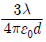
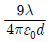
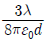
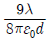
(정답률: 62%)
3. ∇ ∘ i = 0 에 대한 설명이 아닌것은?
- 도체 내에 흐르는 전류는 연속이다.
- 도체 내에 흐르는 전류는 일정하다.
- 단위 시간당 전하의 변화가 없다.
- 도체 내에 전류가 흐르지 않는다.
(정답률: 72%)
4. 환상 철심에 감은 코일에 5[A]의 전류를 흘려 2000[AT]의 기자력을 생기게 하려면 코일의 권수(회)는 얼마로 하여야 하는가?
- 10000
- 500
- 400
- 250
(정답률: 84%)
5. 압전기 현상에서 분극이 응력에 수직한 방향으로 발생하는 현상은?
- 종효과
- 횡효과
- 역효과
- 직접효과
(정답률: 79%)
6. 다음 중 금속에서의 침투깊이에 대한 설명으로 옳은것은?
- 같은 금속을 사용할 경우 전자파의 주파수를 증가시키면침투깊이가 증가한다.
- 같은 주파수의 전자파를 사용할 경우 전도율이 높은 금속을 사용하면 침투깊이가 감소한다.
- 같은 주파수의 전자파를 사용할 경우 투자율 값이 작은 금속을 사용하면 침투깊이가 감소한다.
- 같은 금속을 사용할 경우 어떤 전자파를 사용하더라도 침투깊이는 변하지 않는다.
(정답률: 70%)
7. 그림과 같이 단면적이 균일한 환상철심에 권수 N1인 A코일과 권수 N2인 B코일이 있을 때 A코일의 자기인덕턴스가 L1[H]라면 두 코일의 상호인덕턴스 M은 몇 [H]인가? (단, 누설자속은 0이라 한다.)
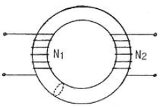
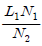
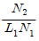
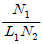
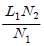
(정답률: 77%)
8. 단면적 1000[mm2] 길이 600[mm]인 강자성체의 철심에 자속밀도 B=1[Wb/m2]를 만들려고 한다. 이 철심에 코일을 감아 전류를 공급하였을 때 발생되는 기자력[AT]은?(문제 오류로 전항 정답처리 되었습니다. 여기서는 1번을 누르면 정답 처리 됩니다.)
- 6×10-4
- 6×10-3
- 6×10-2
- 6×10-1
(정답률: 78%)
9. 그림과 같은 모양의 자화곡선을 나타내는 자성체 막대를 충분히 강한 평등자계 중에서 매분 3000회 회전시킬 때 자성체는 단위체적당 매초 약 몇 [kcal]의 열이 발생하는가? (단, Br = 2[wb/m2], HL = 500[AT/m], B =μH에서 μ는 일정하지 않음)
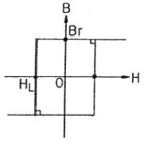
- 11.7
- 47.6
- 70.2
- 200
(정답률: 51%)
10. 자기유도계수 L의 계산 방법이 아닌 것은? (단, N : 권수,
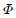
: 자속, I : 전류, A : 벡터 포텐샬, i : 전류 밀도, B : 자속밀도, H : 자계의 세기이다.)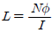
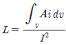
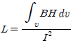
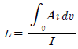
(정답률: 70%)
11. 반지름 2[mm]의 두 개의 무한히 긴 원통 도체가 중심 간격 2[m]로 진공 중에 평행하게 놓여 있을 때 1[km]당의 정전용량은 약 몇 [μF]인가?
- 1×10-3
- 2×10-3
- 4×10-3
- 6×10-3
(정답률: 48%)
12. 전위가 VA 인 A 점에서 Q[C]의 전하를 전계와 반대 방향으로 l[m]이동 시킨 점 P의 전위[V]는? (단, 전계 E는 일정하다고 가정한다.)
- Vp=VA-El
- Vp=VA+El
- Vp=VA-EQ
- Vp=VA+EQ
(정답률: 49%)
13. 정전용량 C[F]인 평행판 공기 콘덴서에 전극간격의 1/2 두께인 유리판을 전극에 평행하게 넣으면 이때의 정전용량은 몇[F]인가? (단, 유리의 비유전율은 εs라 한다.)
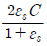
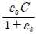
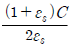
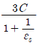
(정답률: 70%)
14. 자성체의 경계면에 전류가 없을 때의 경계조건으로 틀린 것은?
- 전속밀도 D의 법선성분 D1N=D2N=μ2/μ1
- 자속밀도 B의 법선성분 B1N=B2N
- 자계 H의 접선성분 H1T=H2T
- 경계면에서의 자력선의 굴절 tanθ1/tanθ2=μ1/μ2
(정답률: 75%)
15. Z축의 정방향(+방향)으로 10πaz가 흐를 때 이 전류로부터 5[m] 지점에 발생되는 자계의 세기 H[A/m]는?
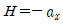
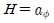
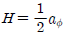
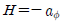
(정답률: 52%)
16. 다음 중 스토크스(stokes)의 정리는?
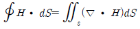
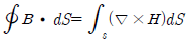
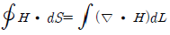
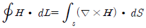
(정답률: 69%)
17. 그림과 같은 전기 쌍극자에서 P점의 전계의 세기는 몇[V/m]인가?
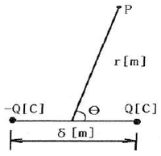
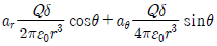
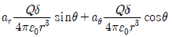
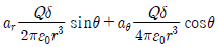
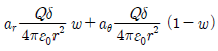
(정답률: 51%)
18. 전기 쌍극자에 의한 전계의 세기는 쌍극자로부터의 거리 r에 대해서 어떠한가?
- r에 반비례한다.
- r2에 반비례한다.
- r3에 반비례한다.
- r4에 반비례한다.
(정답률: 79%)
19. 그림과 같은 공심 토로이드 코일의 권선수를 N배하면 인덕턴스는 몇 배 되는가?
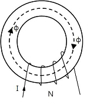
- N-2
- N-1
- N
- N2
(정답률: 78%)
20. 전위함수가 V = 2x+5yz+3일 때, 점 (2, 1, 0)에서의 전계의 세기는?
- -2i-5j-3k
- i+2j+3k
- -2i-5k
- 4i+3k
(정답률: 66%)
2과목: 전력공학
21. 연가를 해도 효과가 없는 것은?
- 직렬 공진의 방진
- 통신선의 유도 장해 감소
- 대지 정전용량의 감소
- 선로 정수의 평형
(정답률: 71%)
22. 단락 보호용 계전기의 범주에 가장 적합한 것은?
- 한시 계전기
- 탈조 보호 계전기
- 과전류 계전기
- 주파수 계전기
(정답률: 76%)
23. 현수애자 4개를 1련으로 한 66[kV] 송전선로가 있다. 현수애자 1개의 절연저항이 2000[㏁]이라면, 표준 경간을 200[m]로 할 때 1[km]당의 누설 컨덕턴스[℧]는?
- 0.63×10-9
- 0.93×10-9
- 1.23×10-9
- 1.53×10-9
(정답률: 42%)
24. 배전선로에서 사고범위의 확대를 방지하기 위한 대책으로 적당하지 않은 것은?
- 배전 계통의 루프화
- 선택접지 계전 방식 채택
- 구분 개폐기 설치
- 선로용 콘덴서 설치
(정답률: 65%)
25. 직류 송전 방식에 비하여 교류 송전방식의 가장 큰 이점은?
- 선로의 리액턴스에 의한 전압강하가 없으므로 장거리 송전에 유리하다.
- 변압이 쉬워 고압 송전에 유리하다.
- 같은 절연에서 송전 전력이 크게 된다.
- 지중송전의 경우, 충전 전류와 유전체손을 고려하지 않아도 된다.
(정답률: 65%)
26. 개폐장치 중에서 고장 전류의 차단능력이 없는 것은?
- 진공 차단기
- 유입 개폐기
- 리클로저
- 전력 퓨즈
(정답률: 54%)
27. 전력 계통의 안정도 향상 대책으로 옳지 않은 것은?
- 전압 변동을 크게 한다.
- 고속도 재폐로 방식을 채용한다.
- 계통의 직렬 리액턴스를 낮게 한다.
- 고속도 차단 방식을 채용한다.
(정답률: 77%)
28. 부하전력, 선로 길이 및 선로 손실이 동일할 경우 전선동량이 가장 적은 방식은?
- 3상 3선식
- 3상 4선식
- 단상 3선식
- 단상 2선식
(정답률: 67%)
29. 다음 중 동작 시간에 따른 보호 계전기의 분류와 그 설명으로 틀린 것은?
- 순한시 계전기는 설정된 최소 작동 전류 이상의 전류가 흐르면 즉시 작동하는 것으로 한도를 넘은 양과는 관계가 없다.
- 정한시 계전기는 설정된 값 이상의 전류가 흘렀을 때 작동 전류의 크기와는 관계없이 항상 일정한 시간 후에 작동하는 계전기이다.
- 반한시 계전기는 작동시간이 전류값의 크기에 따라 변하는 것으로 전류값이 클수록 느리게 동작하고 반대로 전류값이 작아질수록 빠르게 작동하는 계전기이다.
- 반한시성 정한시 계전기는 어느 전류값까지는 반한시성이지만, 그 이상이 되면 정한시로 작동하는 계전기이다.
(정답률: 73%)
30. 동기조상기 (A)와 전력용 콘덴서 (B)를 비교한 것으로 옳은 것은?
- 조정 : (A)는 계단적, (B)는 연속적
- 전력손실 : (A)가 (B)보다 적음
- 무효전력 : (A)는 진상, 지상 양용 (B)는 진상용
- 시송전 : (A)는불가능, (B)는 가능
(정답률: 78%)
31. 발전기 출력 PG[kW], 연료 소비량 B[kg], 연료의 발열량 H[kcal/kg]일 때 이 화력발전의 열효율은 몇[%]인가?
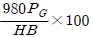
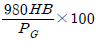
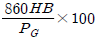
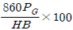
(정답률: 66%)
32. 그림과 같은 회로에 있어서의 합성 4단자 정수에서 B0의 값은?(오류 신고가 접수된 문제입니다. 반드시 정답과 해설을 확인하시기 바랍니다.)
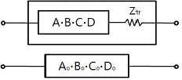
- B0=B+Ztr
- B0=A+BZtr
- B0=C+DZtr
- B0=B+AZtr
(정답률: 49%)
33. 감속재의 온도 계수란?
- 감속재의 시간에 대한 온도 상승률
- 반응에 아무런 영향을 주지 않는 계수
- 감속재의 온도 1[℃] 변화에 대한 반응도의 변화
- 열중성자로에서 양(+)의 값을 갖는 계수
(정답률: 74%)
34. 반지름이 1.2[cm]인 전선 1선을 왕로로 하고 대지를 귀로로 하는 경우 왕복회로의 총 인덕턴스는 약 몇 [mH/km]인가? (단, 등가 대지면의 깊이는 600[m]이다.)
- 2.4025
- 2.3525
- 2.2639
- 2.2139
(정답률: 37%)
35. 전력계통에서 인터록의 설명으로 알맞은 것은?
- 부하 통전시 단로기를 열 수 있다.
- 차단기가 열려 있어야 단로기를 닫을 수 있다.
- 차단기가 닫혀 있어야 단로기를 열 수 있다.
- 차단기의 접점과 단로기의 접점이 기계적으로 연결되어 있다.
(정답률: 81%)
36. 연간 전력량이 E[kWh]이고, 연간 최대 전력이 W[kW]인 연부하율은 몇 [%]인가?
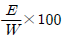
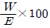
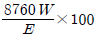
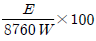
(정답률: 72%)
37. 수전단을 단락한 경우 송전단에서 본 임피던스는 300[Ω]이고, 수전단을 개방한 경우에는 1200[Ω]이었다. 이 선로의 특성임피던스는?
- 600
- 900
- 1200
- 1500
(정답률: 61%)
38. 3상용 차단기의 정격 차단 용량은?
- √3 × 정격전압× 정격차단전류
- √3 × 정격전압× 정격전류
- 3 × 정격전압× 정격차단전류
- 3 × 정격전압× 정격전류
(정답률: 81%)
39. 수차의 조속기가 너무 예민하면 어떤 현상이 발생되는가?
- 전압 변동률이 작게 된다.
- 수압 상승률이 크게 된다.
- 속도 변동률이 작게 된다.
- 탈조를 일으키게 된다.
(정답률: 70%)
40. 송전선로에서 이상전압이 가장 크게 발생하기 쉬운 경우는?
- 무부하 송전선로를 폐로하는 경우
- 무부하 송전선로를 개로하는 경우
- 부하 송전선로를 폐로하는 경우
- 부하 송전선로를 개로하는 경우
(정답률: 74%)
3과목: 전기기기
41. 유도 전동기에서 권선형 회전자에 비해 농형 회전자의 특성이 아닌 것은?
- 구조가 간단하고 효율이 좋다.
- 견고하고 보수가 용이하다.
- 대용량에서 기동이 용이하다.
- 중, 소형 전동기에 사용된다.
(정답률: 73%)
42. 다음 전동기 중 역률이 가장 좋은 전동기는?
- 동기 전동기
- 반발 기동 전동기
- 농형 유도 전동기
- 교류 정류자 전동기
(정답률: 76%)
43. 직류 발전기의 유기기전력이 230[V], 극수가 4, 정류자 편수가 162인 정류자 편간 전압은 약 몇 [V]인가? (단, 권선법은 중권이다.)
- 5.68
- 6.28
- 9.42
- 10.2
(정답률: 67%)
44. 3150/210[V]의 단상변압기 고압측에 100[V]의 전압을 가하면 가극성 및 감극성일 때에 전압계 지시는 각각 몇 [V]인가?
- 가극성 106.7, 감극성 93.3
- 가극성 93.3, 감극성 106.7
- 가극성 126.7, 감극성 96.3
- 가극성 : 96.3, 감극성 126.7
(정답률: 67%)
45. 3상 유도 전동기에서 2차측 저항을 2배로 하면 그 최대 토크는 어떻게 되는가?
- 2배로 된다.
- 1/2로 줄어든다.
- √2 배가 된다.
- 변하지 않는다.
(정답률: 77%)
46. 원통형 회전자(비철극기)를 가진 동기 발전기는 부하각 δ가 몇도일 때 최대 출력을 낼 수 있는가?
- 0
- 30
- 60
- 90
(정답률: 68%)
47. 6600/210[V]인 단상 변압기 3대를 Δ-Y 로 결선하여 1상 18[kw] 전열기의 전원으로 사용하다가 이것을 Δ-Δ로 결선했을 때, 이 전열기의 소비전력[kW]은 얼마인가?
- 31.2
- 10.4
- 2.0
- 6.0
(정답률: 45%)
48. 스테핑 모터의 속도-토크 특성에 관한 설명 중 틀린 것은?
- 무부하 상태에서 이 값보다 빠른 입력 펄스 주파수에서는 기동시킬 수가 없게 되는 주파수를 최대 자기동 주파수라 한다.
- 탈출(풋아웃) 토크와 인입(풀인)토크에 의해 둘러쌓인 영역을 슬루(slew) 영역이라 한다.
- 슬루 영역에서는 펄스레이트를 변화시켜도 오동작이나 공진을 일으키지 않는 안정한 영역이다.
- 무부하시 이 주파수 이상의 펄스를 인가하여도 모터가 응답할 수 없는 것을 최대 응답 주파수라 한다.
(정답률: 52%)
49. 농형 유도 전동기에 주로 사용되는 속도 제어법은?
- 2차 저항제어법
- 극수 변환법
- 종속 접속법
- 2차 여자 제어법
(정답률: 74%)
50. 단상 변압기가 전부하시 2차 전압은 115[V]이고, 전압 변동률은 2%일 때 1차 단자전압은 몇 [V]인가? (단, 권선비는 20:1이다.)
- 2356
- 2346
- 2336
- 2326
(정답률: 75%)
51. 제 9차 고조파에 의한 기자력의 회전 방향 및 속도는 기본파 회전 자계와 비교할 때 다음 중 적당한 것은?
- 기본파와 역방향이고 9배의 속도
- 기본파와 역방향이고 1/9배의 속도
- 회전자계를 발생하지 않는다.
- 기본파와 동방향이고 9배의 속도
(정답률: 57%)
52. 단상 유도 전동기 중 콘덴서 기동형 전동기의 특성은?
- 회전 자계는 타원형이다.
- 기동 전류가 크다.
- 기동 회전력이 작다.
- 분상 기동형의 일종이다.
(정답률: 47%)
53. 단상 변압기에 있어서 부하역률 80[%]의 지상역률에서 전압 변동률 4[%]이고, 부하역률 100[%]에서 전압 변동률 3[%]라고 한다. 이 변압기의 퍼센트 리액턴스는 약 몇 [%]인가?
- 2.7
- 3.0
- 3.3
- 3.6
(정답률: 57%)
54. 직류 발전기를 전동기로 사용하고자 한다. 이 발전기의 정격전압 120[V], 정격전류 40[A], 전기자 저항 0.15[Ω]이며, 전부하일 때 발전기와 같은 속도로 회전시키려면 단자 전압은 몇[V]를 공급하여야 하는가? (단, 전기자 반작용 및 여자 전류는 무시한다.)
- 114
- 126
- 132
- 138
(정답률: 43%)
55. 동기기의 권선법 중 기전력의 파형이 좋게되는 권선법은?
- 단절권, 분포권
- 단절권, 집중권
- 전절권, 집중권
- 전절권, 2층권
(정답률: 72%)
56. 변압기에 사용하는 절연유가 갖추어야 할 성질이 아닌것은?
- 절연내력이 클 것
- 인화점이 높을 것
- 유동성이 풍부하고 비열이 커서 냉각효과가 클 것
- 응고점이 높을 것
(정답률: 75%)
57. 동기 전동기에서 전기자 반작용을 설명한 것 중 옳은 것은?
- 공급전압보다 앞선 전류는 감자작용을 한다.
- 공급 전압보다 뒤진 전류는 감자 작용을 한다.
- 공급 전압보다 앞선 전류는 교차자화작용을 한다.
- 공급전압보다 뒤진 전류는 교차자화작용을 한다.
(정답률: 71%)
58. 직류 발전기의 병렬 운전에서 부하 분담의 방법은?
- 계자 전류와 무관하다.
- 계자 전류를 증가시키면 부하 분담은 증가한다.
- 계자 전류를 감소하면 부하 분담은 증가한다.
- 계자 전류를 증가하면 부하 분담은 감소한다.
(정답률: 65%)
59. 정류 회로에서 상의 수를 크게 했을 경우 옳은 것은?
- 맥동 주파수와 맥동률이 증가한다.
- 맥동률과 맥동 주파수가 감소한다.
- 맥동 주파수는 증가하고 맥동률은 감소한다.
- 맥동률과 주파수는 감소하나 출력이 증가한다.
(정답률: 72%)
60. 무부하의 장거리 송전선로에 동기 발전기를 접속하는 경우, 송전선로의 자기여자 현상을 방지하기 위해서 동기 조상기를 사용하였다. 이때 동기조상기의 계자전류를 어떻게 하여야 하는가?
- 계자 전류를 0으로 한다.
- 부족 여자로 한다.
- 과여자로 한다.
- 역률이 1인 상태에서 일정하게 한다.
(정답률: 54%)
4과목: 회로이론 및 제어공학
61. Z 변환법을 사용한 샘플치 제어계가 안정되려면 1 + GH(Z) = 0 의 근의 위치는?
- Z 평면의 좌반면에 존재하여야 한다.
- Z 평면의 우반면에 존재하여야 한다.
- |Z|=1인 단위 원내에 존재하여야 한다.
- |Z|=1인 단위 원밖에 존재하여야 한다.
(정답률: 74%)
62. 2차계의 주파수 응답과 시간 응답간의 관계 중 잘못된 것은?
- 안정된 제어계에서 높은 대역폭은 큰 공진 첨두값과 대응된다.
- 최대 오버슈트와 공진 첨두값은
 (감쇠율)만의 함수로 나타낼 수 있다.
(감쇠율)만의 함수로 나타낼 수 있다. - ωn (고유주파수) 일정시
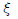
(감쇠율)가 증가하면 상승 시간과 대역폭은 증가한다. - 대역폭은 영 주파수 이득보다 3[dB]떨어지는 주파수로 정의된다.
(정답률: 48%)
63. 전달함수
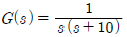
에 ω =0.1인 정현파 입력을 주었을 때 보드선도의 이득은?- -40[dB]
- -20[dB]
- 0[dB]
- 20[dB]
(정답률: 45%)
64. 제어량을 어떤 일정한 목표값으로 유지하는 것을 목적으로 하는 제어법은?
- 추종제어
- 비율제어
- 프로그램제어
- 정치제어
(정답률: 59%)
65. 자동제어의 분류에서 제어량의 종류에 의한 분류가 아닌 것은?
- 서보 기구
- 추치 제어
- 프로세스 제어
- 자동조정
(정답률: 58%)
66. 미분방정식이
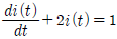
일 때 i(t)는? (단,t=0에서 i(0)=0 이다.)(문제 오류로 전항 정답처리 되었습니다. 여기서는 1번을 누르면 정답 처리 됩니다.)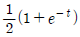
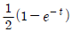
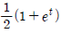
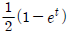
(정답률: 71%)
67. s3+11s2+2s +40=0 에는 양의 실수부를 갖는 근은 몇 개 있는가?
- 0
- 1
- 2
- 3
(정답률: 72%)
68. 다음 블록선도에서 C/R 는?
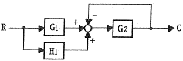
(정답률: 72%)
69. 그림과 같은 회로망은 어떤 보상기로 사용될 수 있는가? (단, 1 ≪ R1C 인 경우로 한다.)
- 지연 보상기
- 지ㆍ진상 보상기
- 지상 보상기
- 진상 보상기
(정답률: 61%)
70. 계의 특성상 감쇠계수가 크면 위상여유가 크고, 감쇠성이 강하여 (A)는(은) 좋으나 (B)는(은) 나쁘다. A, B를 바르게 묶은 것은?
- 안정도, 응답성
- 응답성, 이득여유
- 오프셋, 안정도
- 이득여유, 안정도
(정답률: 62%)
71. 그림과 같은 π 형 회로에서 4단자 정수 B는?
(정답률: 71%)
72. 그림의 전기회로에서 전달함수 는?
(정답률: 72%)
73. 다음 파형의 라플라스 변환은?
(정답률: 54%)
74. 파형이 톱니파 일 경우 파형률은?
- 1.155
- 1.732
- 1.141
- 0.577
(정답률: 53%)
75. RL 직렬회로에 직류전압 5[V]를 t=0에서 인가하였더니 [mA](t≥0)이었다. 이 회로의 저항을 처음 값의 2배로 하면 시정수는 얼마가 되겠는가?
- 10[msec]
- 40[msec]
- 5[sec]
- 25[sec]
(정답률: 49%)
76. 회로망 출력단자 a-b에서 바라본 등가 임피던스는?
- 1/(s+3)
- s+15
- 3/(s+2)
- 2s+6
(정답률: 62%)
77. 그림과 같은 회로에서 a-b 사이의 전위차[V]는?
- 10[V]
- 8[V]
- 6[V]
- 4[V]
(정답률: 58%)
78. 각 상의 임피던스가 R+jX[Ω]인 것을 Y 결선으로 한 평형 3상 부하에 선간전압 E[V]를 가하면 선전류는 몇 [A]가 되는가?
(정답률: 60%)
79. 저항 R과 리액턴스 X를 병렬로 연결할 때의 역률은?
(정답률: 56%)
80. 다음에서 fε(t)는 우함수, f0(t)는 기함수를 나타낸다. 주기함수f(t)=fε(t)+f0(t)에 대한 다음의 서술 중 바르지 못한 것은?
(정답률: 52%)
5과목: 전기설비기술기준 및 판단기준
81. 변전소의 주요 변압기에 시설하지 않아도 되는 계측장치는?
- 역률
- 전압
- 전력
- 전류
(정답률: 75%)
82. 정격전류 35[A]인 과전류 차단기로 보호되는 저압 옥내 전로에 사용되는 연동선의 굵기[mm2]는? (단, 분기점에서 하나의 소켓 또는 하나의 콘센트 등에 이르는 부분의 전선은 제외한다.)(오류 신고가 접수된 문제입니다. 반드시 정답과 해설을 확인하시기 바랍니다.)
- 2.5
- 4.0
- 6.0
- 10
(정답률: 22%)
83. 고압 또는 특고압과 저압의 혼촉에 의한 위험방지시설로 가공공동지선을 설치하여 2 이상의 시설 장소에 제2종 접지공사를 할 때, 가공공동지선은 지름 몇 [mm] 이상의 경동선을 사용하여야 하는가?
- 1.5
- 2
- 3.5
- 4
(정답률: 47%)
84. 25[KV]이하의 특고압 가공전선로가 상호간 접근 또는 교차하는 경우 사용전선이 양쪽 모두 나전선인 경우 이격거리는 얼마 이상이어야 하는가?
- 1.0[m]
- 1.2[m]
- 1.5[m]
- 1.75[m]
(정답률: 58%)
85. 옥내에 시설하는 전동기가 과전류로 소손될 우려가 있을 경우 자동적으로 이를 저지하거나 경보하는 장치를 하여야 한다. 정격출력이 몇 [KW] 이하인 전동기에는 이와 같은 과부하 보호장치를 시설하지 않아도 되는가?
- 0.2
- 0.75
- 3
- 5
(정답률: 64%)
86. 154[KV] 가공전선로를 시가지에 시설하는 경우 특고압 가공전선에 지락 또는 단락이 생기면 몇 초 이내에 자동적으로 이를 전로로부터 차단하는 장치를 시설하는가?
- 1
- 2
- 3
- 5
(정답률: 70%)
87. 점검할 수 없는 은폐된 장소로 400[V] 미만의 건조한 장소의 옥내배선 공사로 알맞은 것은?
- 금속 덕트 공사
- 플로어 덕트 공사
- 라이팅 덕트 공사
- 버스 덕트 공사
(정답률: 54%)
88. 사용전압이 22.9[KV]인 가공전선과 그 지지물사이의 이격거리는 일반적으로 몇 [cm] 이상이어야 하는가?
- 5
- 10
- 15
- 20
(정답률: 55%)
89. 특고압 전선로에 사용되는 애자장치에 대한 갑종 풍압하중은 그 구성재의 수직투영면적 1[m2]에 대한 풍압하중을 몇 pa 를 기초 하여 계산한 것인가?
- 592
- 668
- 946
- 1039
(정답률: 61%)
90. 저압 가공인입선 시설시 사용할 수 없는 전선은?
- 절연전선, 다심형 전선, 케이블
- 경간 20m 이하인 경우 지름 2mm 이상의 인입용 비닐절연선
- 지름 2.6mm 이상의 인입용 비닐절연전선
- 사람 접촉우려가 없도록 시설하는 경우 옥외용 비닐절연전선
(정답률: 39%)
91. 직류 귀선의 궤도 근접 부분이 금속제 지중 관로와 1[km]안에 접근하는 경우 금속제 지중관로에 대한 전식작용의 장해를 방지하기 위한 귀선의 시설방법으로 옳은 것은?(오류 신고가 접수된 문제입니다. 반드시 정답과 해설을 확인하시기 바랍니다.)
- 귀선은 정극성으로 할 것
- 귀선의 궤도 근접 부분에 1년간의 평균 전류가 통할 때에 생기는 전위차는 그 구간안의 어느 2점 사이에서도 2[V] 이하일 것
- 귀선용 레일은 특수한 곳 이외에는 길이 50[m] 이상이 되도록 연속하여 용접할 것
- 귀선용 레일의 이음매의 저항을 합친 값은 그 구간의 레일 자체의 저항의 30% 이하로 유지할 것
(정답률: 40%)
92. 옥내에 시설하는 저압전선으로 나전선을 사용할 수 없는 공사는?
- 전개된 곳의 애자 사용 공사
- 금속 덕트 공사
- 버스 덕트 공사
- 라이팅 덕트 공사
(정답률: 59%)
93. 440[V]의 저압 배선을 사람의 접촉 우려가 없는 경우에 금속관 공사를 하였을 때 금속관에는 어떤 접지 공사를 해야 하는가?(오류 신고가 접수된 문제입니다. 반드시 정답과 해설을 확인하시기 바랍니다.)
- 제1종
- 제2종
- 제3종
- 특별 제3종
(정답률: 46%)
94. 발전소 또는 변전소로부터 다른 발전소 또는 변전소를 거치지 아니하고 전차선로에 이르는 전선을 무엇이라 하는가?
- 급전선
- 전기철도용 급전선
- 급전선로
- 전기철도용 급전선로
(정답률: 50%)
95. 가공 케이블 시설시 고압 가공전선에 케이블을 사용하는 경우 조가용선은 단면적이 몇 [mm2] 이상인 아연도 강연선이어야 하는가?
- 8
- 14
- 22
- 30
(정답률: 66%)
96. 3300[V] 고압 가공전선을 교통이 번잡한 도로를 횡단하여 시설하는 경우 지표상 높이를 몇 [m] 이상으로 하여야 하는가?(오류 신고가 접수된 문제입니다. 반드시 정답과 해설을 확인하시기 바랍니다.)
- 5.0
- 5.5
- 6.0
- 6.5
(정답률: 60%)
97. 특고압 가공전선로의 경간은 지지물이 철탑인 경우 몇[m] 이하이어야 하는가? (단, 단주가 아닌 경우이다.)
- 400
- 500
- 600
- 700
(정답률: 60%)
98. 최대사용전압이 154[KV]인 중성점 직접접지식 전로의 절연내력 시험전압은 몇 [V] 인가?
- 110880
- 141680
- 169400
- 192500
(정답률: 53%)
99. 특고압 가공전선로 및 선로길이 몇 [km] 이상의 고압 가공전선로에는 보안상 특히 필요한 경우에 가공전선로의 적당한 곳에서 통화할 수 있도록 휴대용 또는 이동용의 전력보안 통신용 전화설비를 시설하여야 하는가?(오류 신고가 접수된 문제입니다. 반드시 정답과 해설을 확인하시기 바랍니다.)
- 2
- 3
- 5
- 7
(정답률: 47%)
100. 저압 가공전선 또는 고압 가공전선이 건조물과 접근상태로 시설되는 경우 상부 조영재의 옆쪽과의 이격거리는 각가 몇 [m]인가?
- 저압 : 1.2[m], 고압 : 1.2[m]
- 저압 : 1.2[m], 고압 : 1.5[m]
- 저압 : 1.5[m], 고압 : 1.5[m]
- 저압 : 1.5[m], 고압 : 2.0[m]
(정답률: 50%)